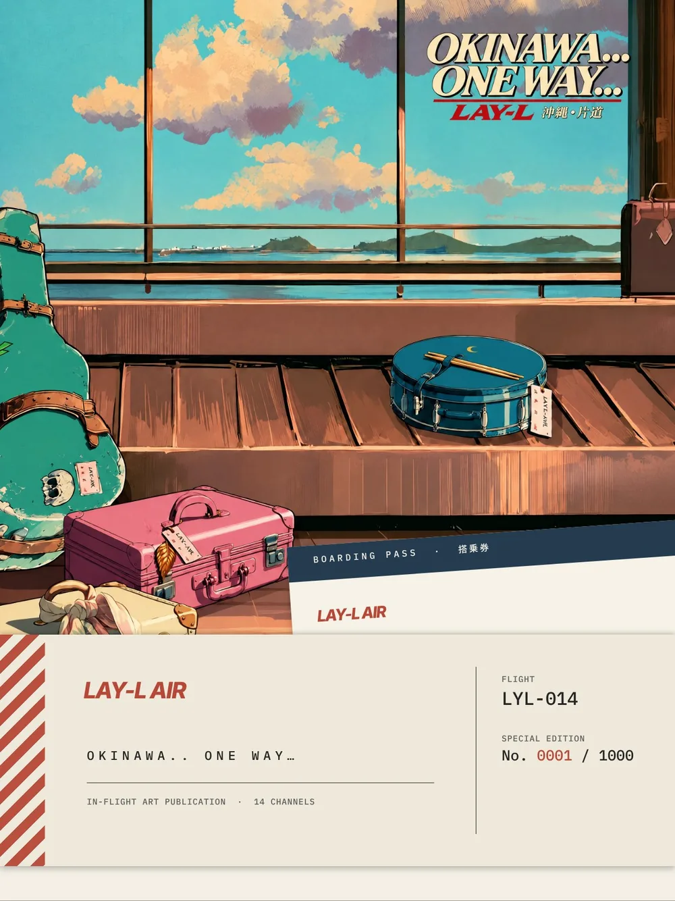
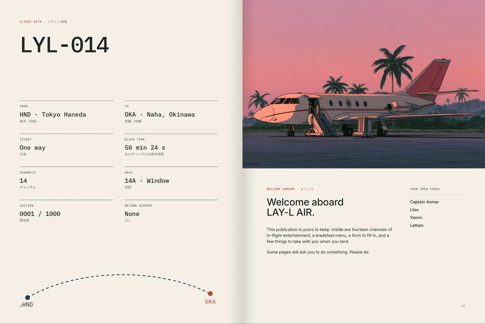
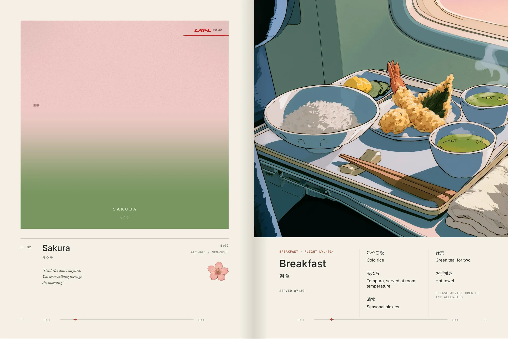
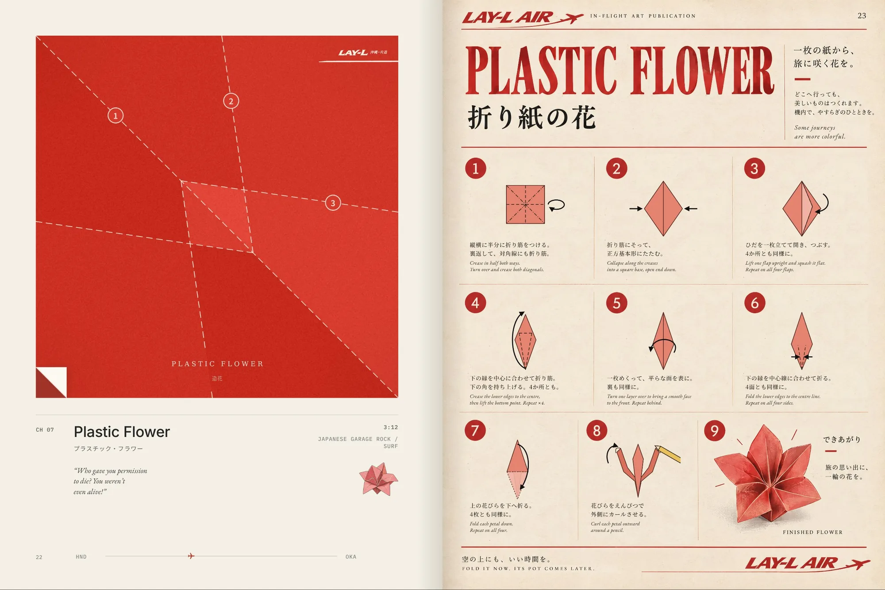
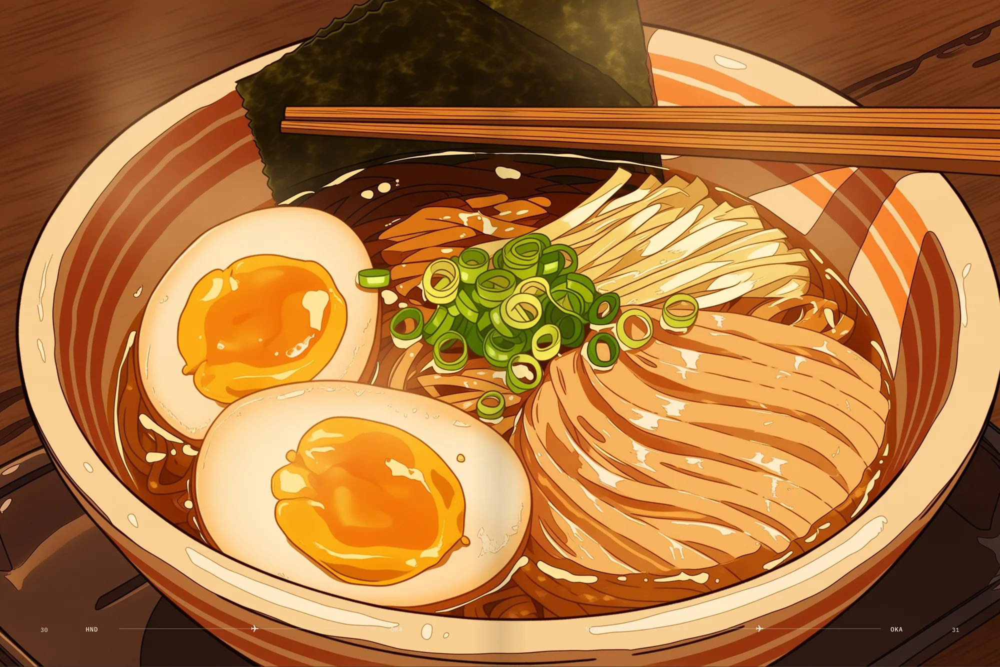
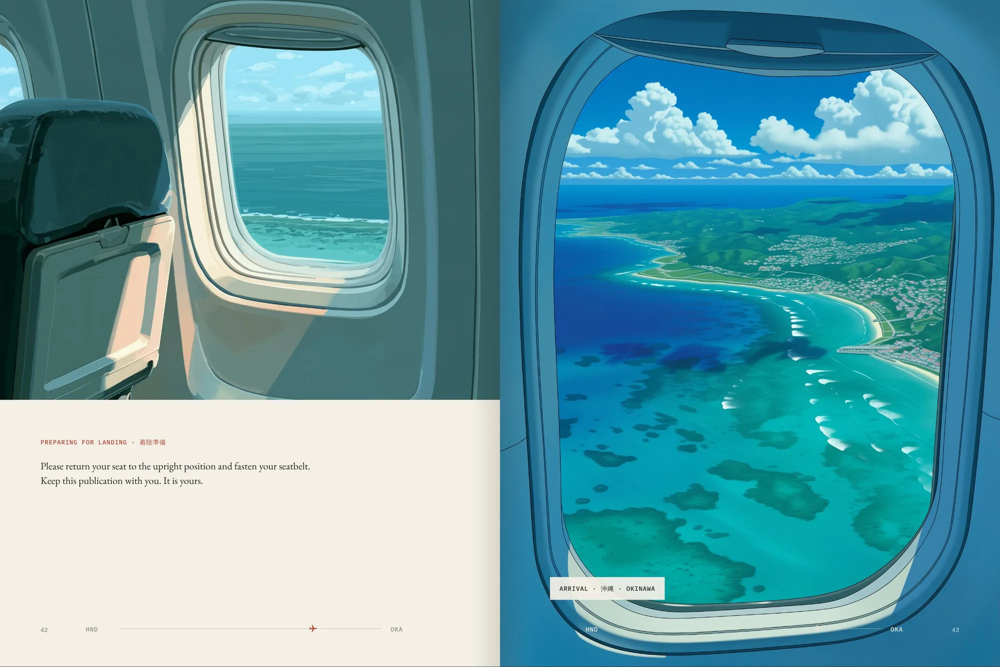
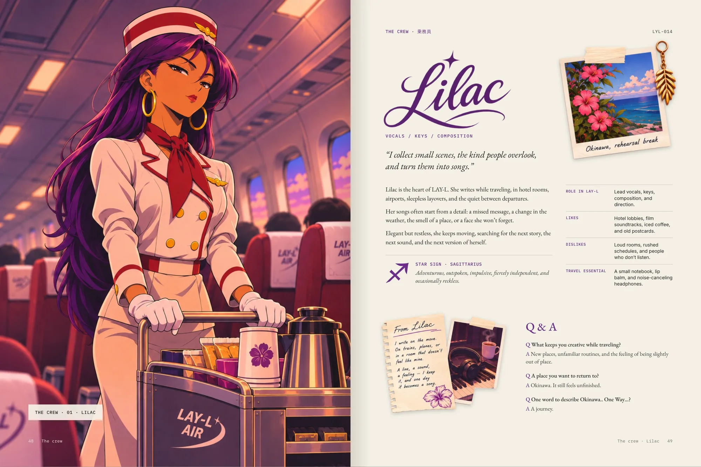

Seven spreads from the 120-page in-flight magazine. The rest is waiting on board.







120 pages: every channel, the crew, the lyrics, the archive, and a few things to fold and keep.
Duty-free shop